Lösung Puzzle 36: Weisen eines Dreiblattes beim Jassen
Aus den 36 Karten kann ein Blatt zu 9 Karten auf
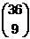 = 94'143'280 mögliche
Fälle zusammengestellt werden. Es werden nun die Anzahl der günstigen Fälle für die drei gestellten Fragen angegeben
und die Wahrscheinlichkeit als Quotient der günstigen durch die möglichen Fälle berechnet.
Die Herleitung der Resultate stammt von meinem ehemaligen Kollegen Walter Burgherr:
Herleitung der Resultate (pdf-Datei)
1. Wahrscheinlichkeit für genau drei Dreiblätter
Beispiel eines solchen Falles:
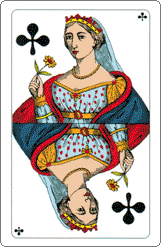
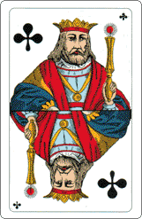
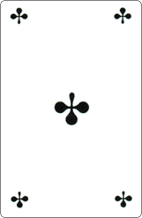
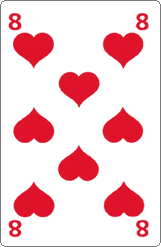
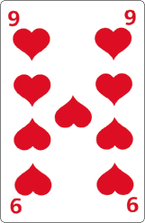
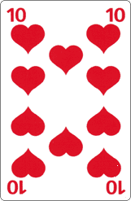
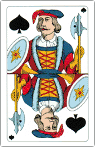
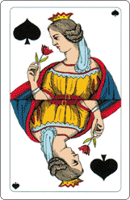
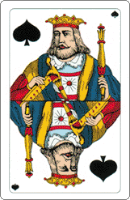
Es gibt 504 + 1372 = 1876 günstige Fälle. Die Wahrscheinlichkeit beträgt daher 1.99 · 10-5 = 0.00199%.
2. Wahrscheinlichkeit für genau zwei Dreiblätter (in restlichen 3 Karten kein Dreiblatt)
Beispiel eines solchen Falles:
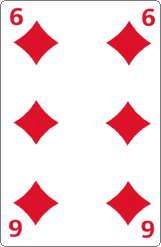
Es gibt 73'908 + 814'500 = 888'408 günstige Fälle. Die Wahrscheinlichkeit beträgt daher 0.9437%.
3. Wahrscheinlichkeit für genau ein Dreiblatt (in restlichen 6 Karten kein Weis)
Beispiel eines solchen Falles:
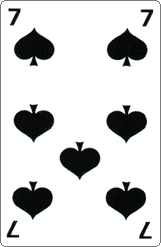
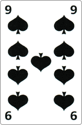
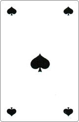
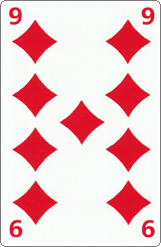
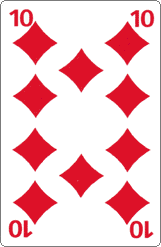
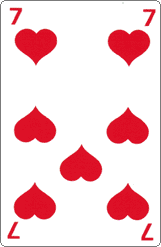
Es gibt 20'014'320 günstige Fälle. Die Wahrscheinlichkeit beträgt daher 21.259%.